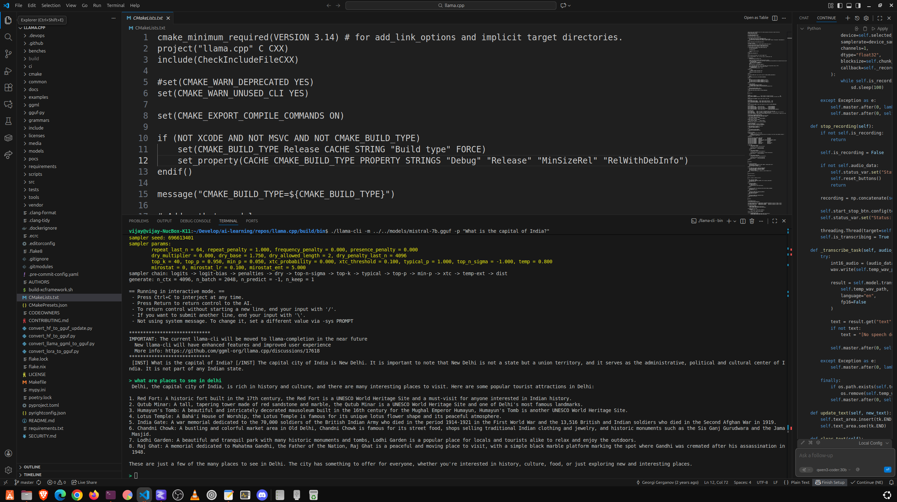

🚀 Complete llama.cpp Setup & Build Guide for Ubuntu
This guide assumes you are starting with a fresh Ubuntu installation and need to use Homebrew (Linuxbrew) to manage development dependencies like cmake and gcc.
Step 1: Install System Prerequisites (Ubuntu's Package Manager)
First, install the fundamental tools needed for all development tasks, including Git and the core compilation toolchain (build-essential).
# 1. Update package lists
sudo apt update
# 2. Install core development tools, file/curl utilities, and git
sudo apt install build-essential procps curl file git
Step 2: Install and Configure Homebrew (Linuxbrew)
Because you opted to use Homebrew, we'll install and configure it to manage the specific development packages required by llama.cpp.
A. Run the Homebrew Installation Script
Run the official Homebrew installation script. You will be prompted to press ENTER to continue and enter your password for sudo access.
/bin/bash -c "$(curl -fsSL https://raw.githubusercontent.com/Homebrew/install/HEAD/install.sh)"
B. Configure Homebrew in Your PATH
After the installation succeeds, you must run the following three commands to make the brew command and all packages it installs available in your terminal. This is the fix for the ... is not in your PATH warning.
echo 'eval "$(/home/linuxbrew/.linuxbrew/bin/brew shellenv)"' >> ~/.bashrc
eval "$(/home/linuxbrew/.linuxbrew/bin/brew shellenv)"
Step 3: Install Core Dependencies (Homebrew)
Now that Homebrew is active, we use it to install the C++ compiler (GCC), the build system (CMake), and the model download client library (cURL). These packages were the source of your initial errors (Could NOT find CMake, Could NOT find CURL).
# 1. Install the latest GCC compiler (required for C/C++ compilation)
brew install gcc
# 2. Install CMake (the build system generator)
brew install cmake
# 3. Install cURL development libraries (fixes the 'Could NOT find CURL' error)
brew install curl
Step 4: Clone the llama.cpp Repository
Use Git to download the source code for the project.
# Clone the repository
git clone https://github.com/ggerganov/llama.cpp.git
# Navigate into the project directory
cd llama.cpp
Step 5: Build llama.cpp with CMake
The CMake process is split into two parts: configuration and compilation. We use a dedicated build subdirectory to keep the source directory clean.
-
Create the build directory:
bash mkdir build cd build -
Configure the build: The
cmake ..command checks for all dependencies (gcc,cmake,curl) and generates the necessary build files (Makefiles). Since you installed all dependencies in the previous steps, this should now succeed.bash cmake .. -
Compile the code: The
makecommand compiles the project. The-j$(nproc)flag tellsmaketo use all available CPU cores, which significantly speeds up the compilation process.bash make -j$(nproc)
✅ Successful Build Verification
After the compilation finishes, the core binaries (like llama-cli, quantize, and perplexity) will be located in the build/bin directory.
Step 6: Running Your First Model
A. Download a GGUF Model
You need a model in the modern GGUF format. Many great models are available from TheBloke on Hugging Face. For example, a small, fast model like Mistral 7B (Q4_K_M quantization) is a great starting point.
# Create a dedicated directory for your models
mkdir -p ../models
cd ../models
# Example: Download a popular small model (replace URL as needed)
curl -L 'https://huggingface.co/TheBloke/Mistral-7B-Instruct-v0.2-GGUF/resolve/main/mistral-7b-instruct-v0.2.Q4_K_M.gguf' -o mistral-7b.gguf
B. Run the Model
Navigate back to the binaries directory and run the model with a simple prompt.
cd ../build/bin
# Replace mistral-7b.gguf with the actual filename if you downloaded a different one
./llama-cli -m ../../models/mistral-7b.gguf -p "What is the capital of India?"
./llama-cli -m ../../models/mistral-7b.gguf -p "What is the capital of Canada?"
This completes the full setup and build process, resolving all the prerequisite issues encountered.

Reuse LM studio model downloads
GGUF (GGML Universal File Format) is the model file format used by both LM Studio and llama.cpp, which is why they are often referred to as "interoperable."
All you need to do is locate the folder where LM Studio stores its models and copy or point llama.cpp to the specific .gguf file you want to use.
How to Use LM Studio GGUF Models with llama.cpp
The main challenge is finding where LM Studio hides its downloaded models on your system.
Step 1: Find the Model Location
LM Studio typically stores models in a hidden directory.
- Open LM Studio.
- Go to the "My Models" tab (usually the second icon on the left sidebar).
- Click on a downloaded model. You should see a section or button that shows the Model Path.
- Copy this full directory path.
The path on Linux/Ubuntu is usually something like this:
/home/user1/.cache/lm-studio/models/
Inside this folder, you will find subdirectories named after the model creator and model, and within those, the actual .gguf files.
Step 2: Copy the Model File
Navigate to the location you found in Step 1 and copy the desired .gguf file to your llama.cpp/models directory.
Assuming your model is at the default location and you named the file my_lm_studio_model.gguf:
# 1. Navigate to your llama.cpp models folder
cd /path/to/your/llama.cpp/models
# 2. Copy the model file from the LM Studio cache
# (You will need to replace the example path below with the exact path you found)
cp /home/user1/.cache/lm-studio/models/SomeUser/ModelName/my_lm_studio_model.gguf .
Step 3: Run the Model with llama-cli
Once the model is in your llama.cpp/models folder (or you use the full path), you can run it using the llama-cli binary you just built.
# 1. Navigate to the compiled binaries
cd /path/to/your/llama.cpp/build/bin
# 2. Run the model
./llama-cli -m ../../models/my_lm_studio_model.gguf -p "What are the three most important facts about the Roman Empire?"
This command loads the model and uses it to process the prompt, confirming that the files are fully interchangeable between LM Studio and the raw llama.cpp binary.
use a symbolic link (symlink) instead of copying the model file
A symbolic link is essentially a pointer or shortcut. When llama.cpp attempts to open the symlink, the operating system transparently directs it to the actual model file in the LM Studio cache, even though the file appears to be in your llama.cpp/models folder.
Here is the process:
1. Locate the Model's Actual Path
First, you need the full, definitive path to the model file inside the LM Studio cache.
- Example LM Studio Path (Source):
/home/user1/.cache/lm-studio/models/TheBloke/Llama-3-8B-Instruct-GGUF/llama-3-8b-instruct.Q4_K_M.gguf
2. Create the Symbolic Link
Use the ln -s command to create the link. You should execute this command from a convenient location, like your llama.cpp/models directory.
Syntax: ln -s <TARGET_FILE_PATH> <LINK_NAME>
Assuming your llama.cpp directory is at ~/Develop/ai-learning/repos/llama.cpp:
# 1. Navigate to your models directory
cd ~/Develop/ai-learning/repos/llama.cpp/models
# 2. Create the symbolic link
# REPLACE the path in single quotes with the actual path to your LM Studio model.
ln -s '/home/user1/.cache/lm-studio/models/TheBloke/Llama-3-8B-Instruct-GGUF/llama-3-8b-instruct.Q4_K_M.gguf' llama-3.gguf
In the example above:
llama-3-8b-instruct.Q4_K_M.ggufis the Target (the real file).llama-3.ggufis the Link Name (the shortcut name you will use).
3. Run llama-cli using the Link Name
Now, you can use the short, simple link name (llama-3.gguf) in your llama-cli command. The paths you need to use remain the same, as the link acts just like the file itself.
Assuming you are in the build/bin/ directory:
# Use the link name, which is inside the ../../models folder
./llama-cli -m ../../models/llama-3.gguf -p "Write a short poem about coding."
This command will successfully load the model from the linked file, without taking up double the disk space.
Build your interface on the top
You can build a sophisticated ttkbootstrap (Tkinter) application to interact with llama.cpp and implement all those features.
The key to success is using the dedicated llama-server (or the Python binding) to handle the long-running model process, combined with Python's threading or asynchronous I/O (like asyncio) in your GUI application to keep the UI responsive.
Here is the breakdown of the recommended architecture and how to achieve each feature:
1. Recommended Architecture: llama-cpp-python
Instead of running the command-line binary (llama-cli or llama-server) as a separate subprocess, the most robust and performant approach for Python is to use the official llama-cpp-python library.
This package is a Python binding (wrapper) for the llama.cpp C++ library, which allows you to load and run GGUF models directly within your Python code.
⚙️ How to Connect (Direct Binding)
- Install the library:
bash # This compiles llama.cpp and installs the Python bindings pip install llama-cpp-python -
Run the model inside your Python code: ```python from llama_cpp import Llama
Load your model (using the path from your successful run)
llm = Llama( model_path="../../models/mistral-7b.gguf", # Corrected path to the GGUF file n_ctx=4096, # Set a large context window for conversation history n_gpu_layers=-1 # Use all GPU layers if you have VRAM )
Generate a response
output = llm("Q: Tell me a joke. A:", max_tokens=100) ```
2. Implementing Core Features in Your ttkbootstrap App
✅ Run Commands in the Background & Update UI
Since model generation is a long-running, blocking task, you must run it in a separate thread to prevent your Tkinter UI from freezing (hanging).
| Feature | Method | Explanation |
|---|---|---|
| Background Task | threading.Thread |
Wrap the model call (llm.create_completion or API call) in a separate thread. This keeps the main Tkinter thread free to update the GUI. |
| UI Update | root.after() |
The separate thread cannot directly update Tkinter widgets. Instead, the thread should put its results (text chunks or the final response) into a thread-safe queue.Queue object. The main Tkinter loop uses the root.after() method to periodically check the queue for new data and safely update the text box. |
✅ Keep History of Conversations (Chat History)
llama.cpp models maintain history by passing the entire conversation (turns) back to the model for every new query.
- Store History: Maintain a Python list of dictionaries in your application, formatted according to the Chat Markup Language (ChatML) template your GGUF model uses (e.g., Mistral uses
[INST]and[/INST]).python conversation_history = [ {"role": "system", "content": "You are a helpful assistant."}, {"role": "user", "content": "Hello! What is your name?"}, {"role": "assistant", "content": "I am an AI, I do not have a name."} ] - Generate Prompt: Before each call to the LLM, format this list into a single long string (the full context) and pass it to the model. The model reads the entire history and generates the next response.
- Update History: Once the response is generated, append the new user query and the new model response to the
conversation_historylist.
✅ Attach Files to the Context (RAG)
The process of "attaching files" to the context is called Retrieval-Augmented Generation (RAG). This is a multi-step process that you will need to implement using another library, such as LangChain or LlamaIndex, which integrates seamlessly with llama-cpp-python.
| Component | Function |
|---|---|
| Documents | The files (PDF, TXT, DOCX) you upload. |
| Embedding Model | A small, fast GGUF model (often a different one) used to convert the text chunks and your user query into vector embeddings (numerical representations). |
| Vector Store | A database (like ChromaDB or FAISS) that stores the vector embeddings of your document chunks. |
| Retrieval | When the user asks a question, LangChain/LlamaIndex uses the query embedding to search the Vector Store and retrieve the most semantically relevant text chunks from your documents. |
| Augmentation | The retrieved text chunks are combined with the original user query into a single, massive prompt, which is then sent to your main GGUF model (mistral-7b.gguf) for context-aware answering. |